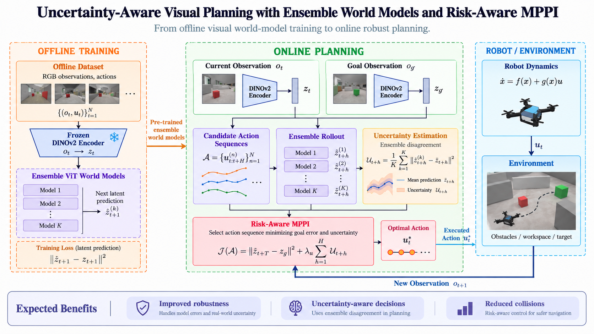

Research · Work in progress
Uncertainty-Aware Visual Planning with DINO World Models
Work in progress: uncertainty-aware visual planning with ensemble latent world models and risk-aware MPPI.

Project overview
This work-in-progress project investigates uncertainty-aware visual planning for aerial robots using an ensemble of latent world models and risk-aware Model Predictive Path Integral control.
The proposed offline pipeline uses RGB observations and actions, a frozen DINOv2 encoder, and an ensemble of vision-transformer world models trained to predict the next latent observation.
During online planning, candidate action sequences are rolled out through the ensemble. Model disagreement provides an uncertainty estimate, while the risk-aware MPPI objective considers both goal error and predicted uncertainty when selecting an action.
The diagram presents the intended architecture and expected benefits. Implementation, evaluation, and collision-reduction results are still in progress and are not claimed as completed outcomes.